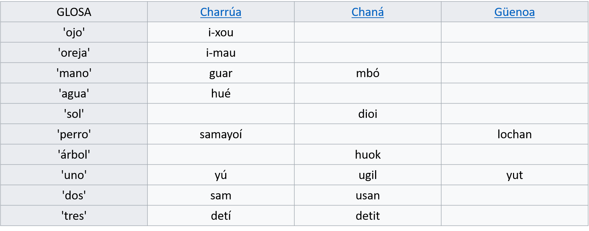

Lenguaje

Su lengua era dura y gutural; lengua particular; distinta del guaraní. La llegada de los españoles significó un fuerte impacto para este grupo, modificando sus hábitos y sus acervo ergo lógico y espiritual.
Se incorporaron a la órbita cultural europea, pero la mayoría la rechazaron completamente resistiéndola con todas sus fuerzas. En esa resistencia llegaron a dominar y/o incorporaron a otros etnos y tribus de distinto origen, como en el caso de los yaros. El caballo aumentó su movilidad y dispersión, cambiando sus costumbres guerreras. Aparece como consecuencia la lanza larga, y el ganado cimarrón pasa objeto de sus caserías.
Las tribus desaparecen a mediados del Siglo XVIII, fuertemente diezmadas tras la campaña punitiva llevada a cabo por José de Andonaegui. El 11 de abril de 1831, en las puntas del Queguay, el Presidente, Rivera determinó los primeros de los episodios que llevó al exterminio de los charrúas.